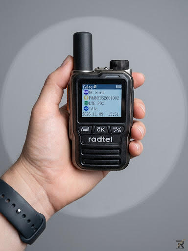

The Radtel P8 is a small zinc-alloy push-to-talk-over-cellular handheld sold mostly as a 2-pack with a SIM already included. There is no radio spectrum involved: it talks over the 4G LTE network, so range is "anywhere you have cell signal." We tested a P8 ourselves: it sounds clear and loud, feels solid for the price, and has one real trade-off, a 1 to 2 second delay on PTT. Specs and cost details below come from Radtel and the Amazon listing; the hands-on impressions are ours.
Our verdict after using it: 4.5 out of 5. Clear, loud audio and a build that feels premium for the price. The cost is a noticeable PTT delay, and like every PoC radio it only works where you have cell signal.
Good for: teams, families, drivers, event crews and job sites that already have reliable cellular coverage and want push-to-talk across any distance with no monthly bill for the first year.
Skip it if: you need to talk where there is no cell signal (backcountry, basements, disaster response). A PoC radio is a cellular device, and with no signal it is just a paperweight. For that, you want a conventional or dual-mode radio such as the TIDRADIO TD-M2 Pro or GLOBAL-PTT 5288 Plus.
| Type | Push-to-talk over cellular (PoC) handheld, 2-pack with SIMs |
| Platform | GXIN POC Global PTT (poc-global.com), private and group calls |
| Network | 4G LTE. Manufacturer lists B2/B3/B4/B5/B7/B8/B28/B66; the Amazon listing lists a wider set (B1/B2/B3/B4/B5/B7/B8/B12/B13/B17/B66/B38/B40/B41n) |
| SIM | Dual SIM slots; install by removing the battery pack (per the user guide) |
| Display | 1.77" |
| Battery | 3.7V 3000mAh; manufacturer claims standby of "5 days or more" |
| Charging | USB-C |
| Body | Zinc-alloy metal housing (independent review) |
| Water/dust rating | Not published. Radtel claims water resistance and wind-noise suppression but gives no IP rating |
| Latency (claimed) | About 0.3 to 1 second, depending on network |
| GPS | Separate GPS version sold at a higher price; the base unit does not list GPS |
| Channels | Amazon listing states 200 channels |
| In the box | Radio, 3000mAh battery, antenna, belt clip, USB-C cable, AC adapter, hand strap, English manual |
| Warranty / returns | 2-year warranty claimed; 30-day returns with buyer-paid return shipping |
PoC radios send your voice as data over a mobile network to a cloud service, which relays it to everyone in your group. That is why the "range" is nationwide (or international) and why marketing calls it "unlimited." The Amazon listing even claims a 5,000 km maximum range. Treat that as a statement about the network, not the radio: your range is wherever each person has LTE signal, and not one step further.
The independent reviewer (VK3TBS, a ham operator) put it bluntly: the P8 is an LTE communicator with push-to-talk, not an off-grid replacement for conventional radios. It is completely dependent on mobile coverage and goes dead in the bush, underground and in disaster zones. If that sounds like a dealbreaker for how you use radios, it is. If your use is trucks, warehouses, delivery routes, family trips between towns, or event staff, it is not.
This is where the P8 is most attractive, and where you should read the fine print.
| Item | What Radtel states |
|---|---|
| Year one | SIM service included free with the "with SIM" option |
| Year two onward | About $10 per SIM card per year; Radtel extends the service on the same card, no SIM swap |
| Platform / app | Free for life, no monthly fees |
| No-SIM option | You supply your own AT&T, T-Mobile or Verizon SIM and pay that carrier's rate |
| 2-pack price | From about $99 on a sale (code RADTEL60 was listed); GPS 2-pack listed around $179 on sale, $259 regular |
| Larger packs | 4-pack about $189, 6-pack $275, 8-pack $355 (as listed) |
For a two-radio setup, that is roughly $20 a year after year one for connectivity, which is well below typical carrier plans. Sale prices and promo codes change often, so confirm the current price at checkout.
Radtel says the units arrive ready to use out of the box. If you order more than one pack, Radtel can join the radios into a single group using a group name or IMEI numbers, or you can manage groups yourself through an account they provide. The user guide covers SIM installation (battery pack removed, SIM into the slot) and basic operation.
One thing to know: the P8 runs on the third-party GXIN platform, so group administration happens through that system. A competitor's blog claims that some third-party-platform PoC radios charge fees for things like renaming devices or adding group members ($10 to $20 in their examples) and that vendors can see group and contact lists. That is a competitor's claim, not something we verified about Radtel, but it is a fair set of questions to ask any PoC seller before you buy.
Audio and delay: An independent ham-radio review also found clear digital audio with slight latency, which matches our experience. PoC voice is digitised, uploaded and relayed, so there is always some delay compared with a conventional radio. We saw 1 to 2 seconds; Radtel claims 0.3 to 1 second.
Battery: The 3000mAh pack is a good size for a handheld this small. Radtel claims standby of five days or more, and the reviewer called out long battery life and quick charging. Standby claims say little about heavy talk time, so a busy shift may drain it faster.
Build: The zinc-alloy housing gives it a more solid feel than the all-plastic PoC radios in this price range. Radtel publishes no IP rating, so do not assume it survives submersion, heavy rain or pressure washing.

Audio: Voice quality on calls was clear and loud. Voices came through easily without straining to hear, which matters for noisy job sites, vehicles and events.
Delay: We measured about 1 to 2 seconds between pressing PTT and the other radio hearing us. That is slower than Radtel's claimed 0.3 to 1 second, so expect to pause a beat after pressing the button before you speak. It is fine for casual and team use but noticeable in quick back-and-forth.
Build and feel: The P8 feels solid in hand and premium for the price, which fits its zinc-alloy housing. It does not have the hollow, plasticky feel of many budget PoC radios.
The P8 earns 4.5 out of 5 from us. Audio is clear and loud, the body feels solid and premium for the price, and Radtel's stated connectivity cost is about $10 per radio per year after the first. The trade-offs are a 1 to 2 second PTT delay, the usual PoC limit of needing cell coverage, and a few unknowns Radtel does not publish: an IP rating and a data cap. Buy it for coverage-rich team, family or job-site use, and pair it with a conventional radio if you ever need to talk off-grid.
Our hands-on video of the P8.